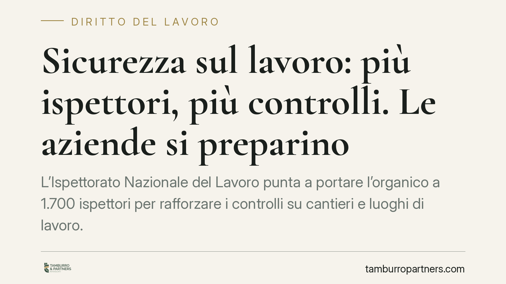

Sicurezza sul lavoro: più ispettori, più controlli. Le aziende si preparino
L'Ispettorato Nazionale del Lavoro punta a portare l'organico a 1.700 ispettori per rafforzare i controlli su cantieri e luoghi di lavoro. Per le imprese significa una probabilità crescente di verifiche ispettive. Conviene non attendere l'accesso degli ispettori, ma mettere in ordine documentazione e adempimenti in materia di salute e sicurezza.

Il contesto
La carenza di personale ispettivo è da anni un nodo del sistema italiano dei controlli sul lavoro. L'obiettivo dichiarato dall'Ispettorato Nazionale del Lavoro (INL) è di arrivare a circa 1.700 ispettori operativi, con una particolare attenzione ai cantieri edili e ai settori a maggior rischio infortunistico.
Più ispettori significano più accessi, più frequenti e meglio distribuiti sul territorio. È un cambiamento quantitativo che produce un effetto pratico immediato: per molte imprese la verifica ispettiva passa da evento raro a possibilità concreta.
Inquadramento normativo
L'attività di vigilanza in materia di salute e sicurezza si fonda sul Testo Unico, il D.Lgs. 81/2008. Gli articoli centrali restano l'art. 17, che individua gli obblighi non delegabili del datore di lavoro — valutazione di tutti i rischi con elaborazione del documento di valutazione dei rischi (DVR) e designazione del responsabile del servizio di prevenzione e protezione (RSPP) — e l'art. 18, che elenca gli obblighi del datore e del dirigente.
Gli ispettori, nell'esercizio dei poteri di vigilanza, possono adottare provvedimenti di prescrizione ai sensi del D.Lgs. 758/1994: di fronte a una violazione, l'organo di vigilanza impartisce una prescrizione con un termine per la regolarizzazione. L'adempimento, accompagnato dal pagamento di una somma ridotta, estingue il reato contravvenzionale. In caso di inadempimento si procede penalmente.
Va ricordato anche l'istituto della sospensione dell'attività imprenditoriale (art. 14 D.Lgs. 81/2008), applicabile in presenza di gravi violazioni in materia di sicurezza o di lavoro irregolare oltre determinate soglie. È una misura interdittiva che incide direttamente sulla continuità aziendale.
Cosa cambia per le imprese
Il punto non è il timore del controllo in sé, ma la consapevolezza che un'ispezione ben condotta verifica la sostanza degli adempimenti, non solo la presenza formale dei documenti. Un DVR esistente ma generico, non aggiornato o scollegato dalla realtà aziendale è esposto a contestazioni.
I settori più interessati restano l'edilizia e le attività con appalti e subappalti, dove la verifica si estende all'idoneità tecnico-professionale delle imprese affidatarie e alla regolarità della catena dei subappalti. Anche la gestione documentale dei DURC e dei contratti di appalto entra nel perimetro del controllo.
Per le imprese con personale, cresce inoltre l'attenzione su formazione, sorveglianza sanitaria e dispositivi di protezione individuale. Sono adempimenti che, se carenti, emergono con facilità durante l'accesso ispettivo.
Cosa fare in concreto
- Verificate l'aggiornamento del DVR. Controllate che il documento rifletta l'attività realmente svolta, i rischi specifici e le eventuali modifiche organizzative recenti. Un DVR "di facciata" è un rischio, non una tutela.
- Controllate la formazione del personale. Assicuratevi che attestati e aggiornamenti periodici di lavoratori, preposti e dirigenti siano completi e tracciabili, con date e contenuti documentati.
- Riordinate la documentazione su appalti e subappalti. Raccogliete DURC aggiornati, verifiche di idoneità tecnico-professionale e contratti, soprattutto nei cantieri.
- Verificate la sorveglianza sanitaria e i DPI. Controllate nomina del medico competente, giudizi di idoneità e consegna documentata dei dispositivi di protezione.
- Predisponete una procedura interna per l'accesso ispettivo. Individuate chi accoglie gli ispettori, dove sono reperibili i documenti e chi è il referente per la sicurezza. Una risposta ordinata riduce i margini di contestazione.
Una considerazione finale
L'aumento dei controlli non va letto solo in chiave difensiva. Una gestione sostanziale della sicurezza riduce gli infortuni, le responsabilità e i costi che ne derivano. Consigliamo di affrontare la verifica della propria posizione prima e non durante l'ispezione: la regolarizzazione spontanea è sempre più agevole di quella imposta da una prescrizione.
Per le situazioni complesse — appalti articolati, contestazioni già ricevute, dubbi sulla delega di funzioni — è opportuno un esame mirato della documentazione e delle responsabilità in capo ai singoli soggetti dell'organizzazione aziendale.
Disclaimer
Contributo informativo a cura di Tamburro & Partners - Avv. Giuseppe Tamburro. Non costituisce parere legale.
Ogni storia di lavoro ha i suoi tempi.
Se gestisci HR e vuoi un confronto su contenzioso, ispezioni o licenziamenti, scrivi allo studio. Ti rispondiamo entro un giorno lavorativo.